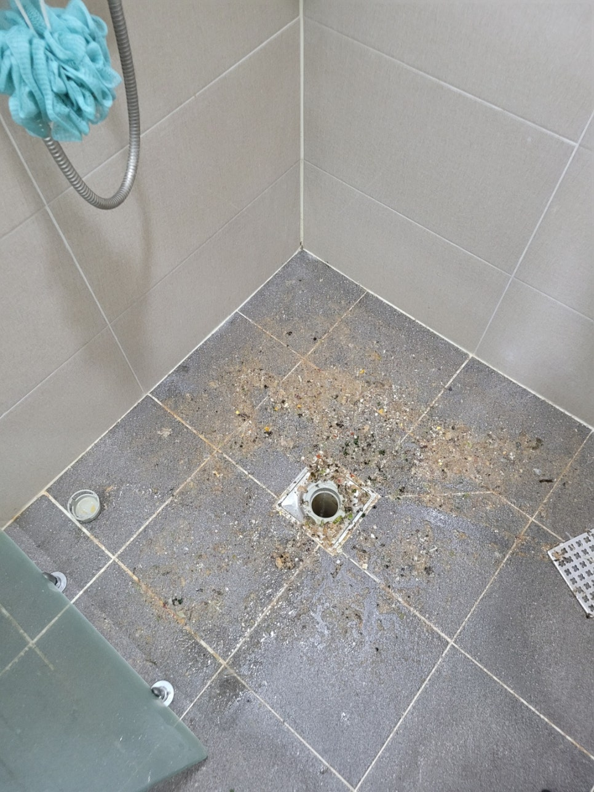
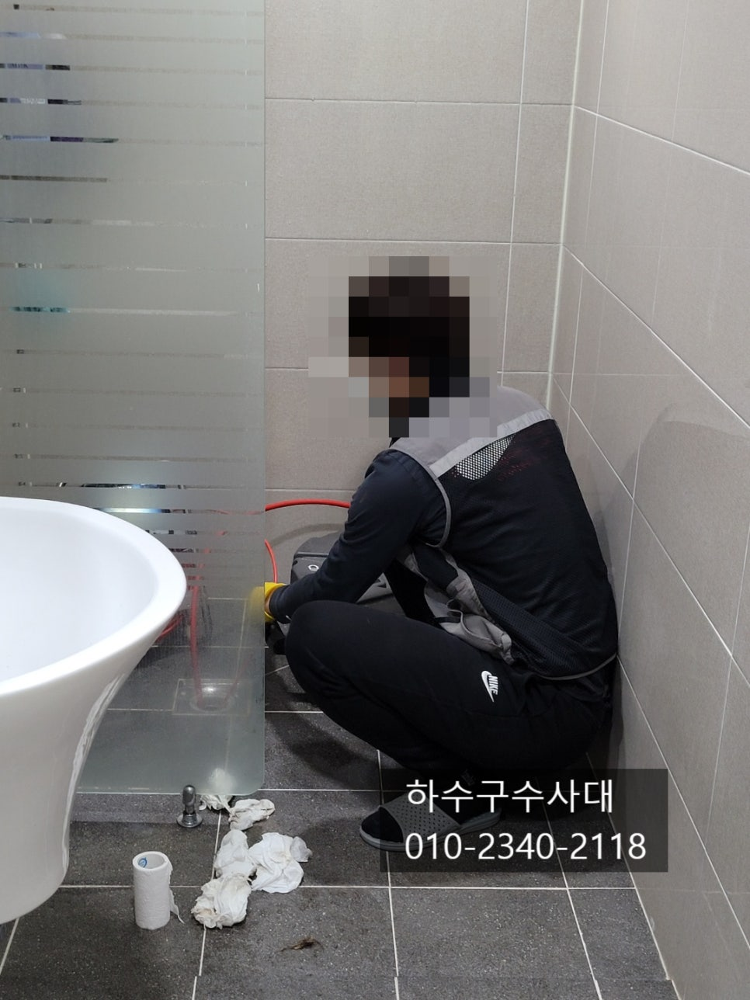
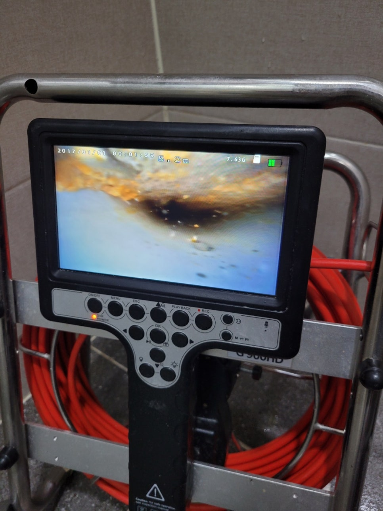
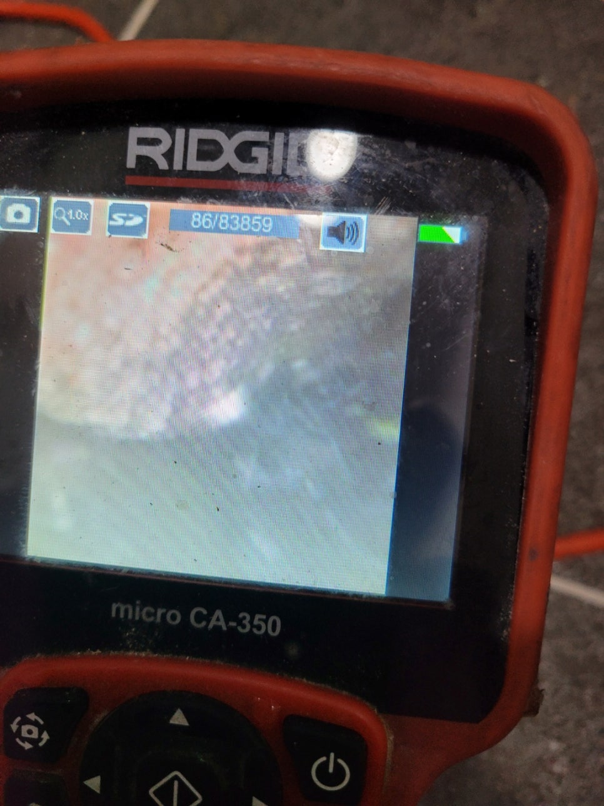
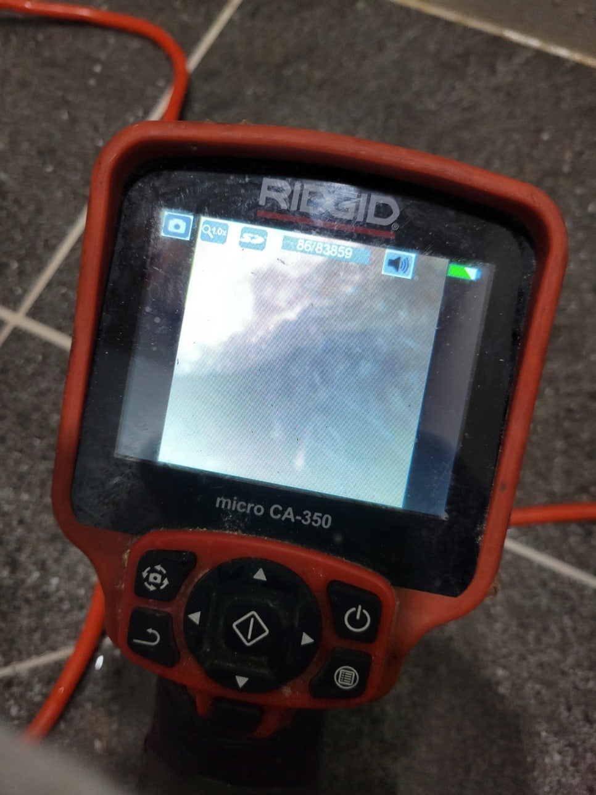
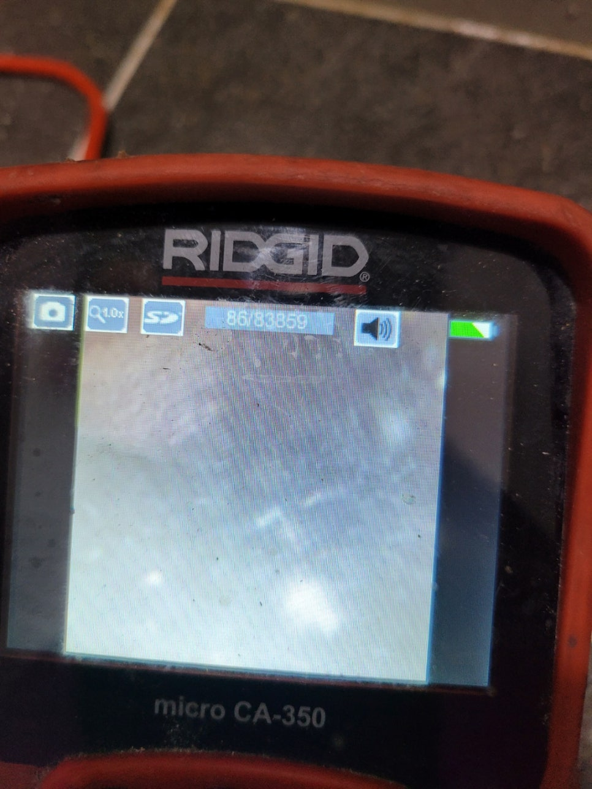
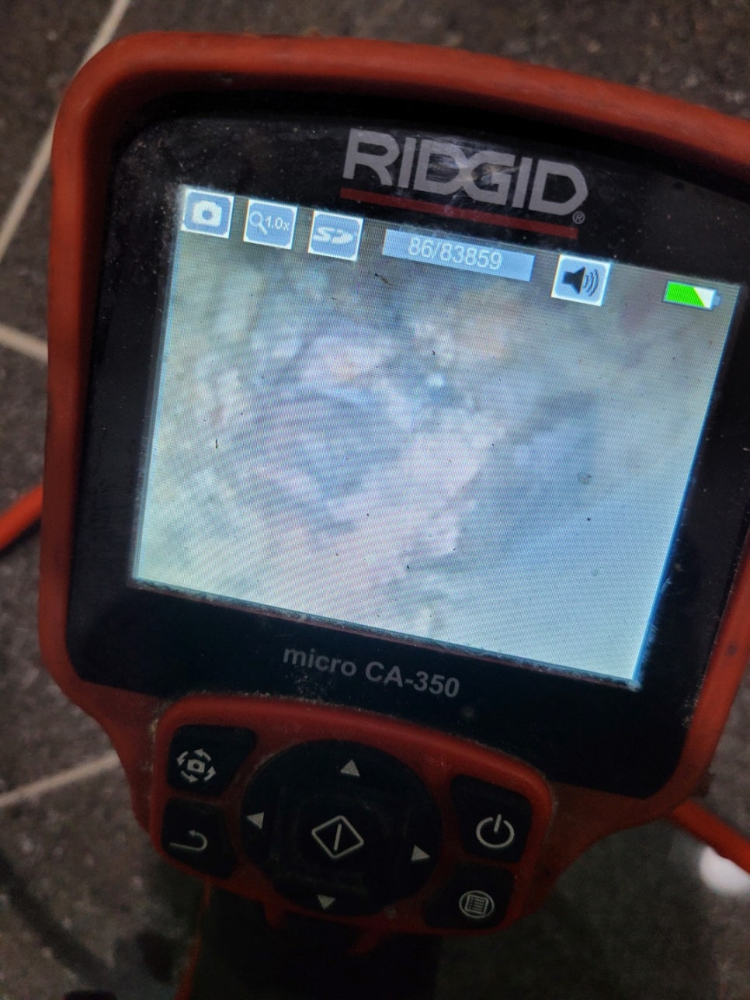
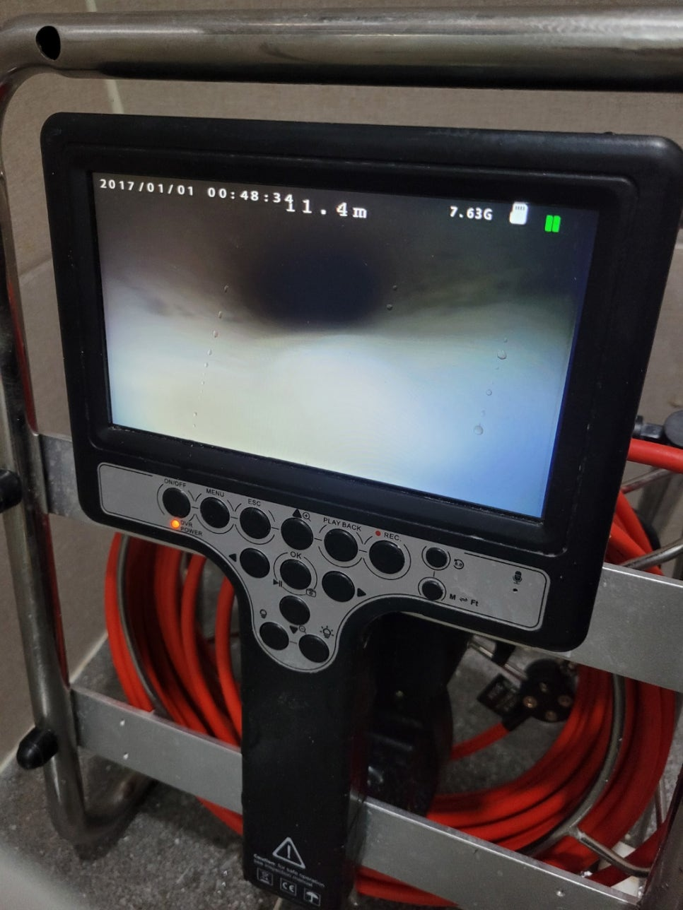

🏠 송탄 하수구 막힘 신장동 서정동 고덕동 하수구 업체 깔끔하게 해결해 드려요
오산 신장동 하수구막힘 전문 시공 후기

📋 작업 개요
- 위치: 오산 신장동, 신장동, 오산
- 서비스 유형: 하수구막힘, 배관막힘, 누수수리, 역류해결, 뚫는업체, 배관청소, 고압세척, 설비공사
- 작업 일시: 2022. 4. 2. 19:11
- 업체명: 하수구수사대 (010-5615-2118)
🔍 문제 상황
송탄 하수구 막힘 신장동 서정동 고덕동 하수구 업체
물이 시원하게 내려가지 않거나
막혔을 때 대부분 전문 업체보다는
철물점에서 구입할 수 있는
스프링, 뚫어뻥, 펑크린들을
떠올리실 텐데요.
오래된 건물의 경우
배관이 부식되어 있어 자칫
손상으로 이어질 수 있습니다.
이는 다른 세대에도
막대한 피해를 입힐 수 있어
무리하게 뚫지 마시고
송탄 하수구 막힘
신장동 서정동 고덕동 하수구 업체에
문의를 주셔야 합니다.
이번에 다녀온 현장은
지어진 지 얼마 되지 않은
건물인데도 불구하고
화장실에서 계속 악취가 올라오고
샤워를 할 수 없을 정도로
물이 천천히 내려가 불편하다며
연락을 주셨습니다.
처음에는 머리카락 때문에
그런가 싶었지만

🔎 원인 분석
💡 전문가 진단: 하수구수사대최신장비보유!1년as 보장!주말,공휴일도 ok!010-2340-2118
거름망에 걸리는 것이
없었다고 하네요.
겉으로 보기엔
아무런 이상이 없어
펑크린만 계속 부으셨는데도
차도가 없었답니다.
그래도 물을 조절해서 틀면
고이는 현상이 덜 한다고 하지만
악취가 너무 심해
참을 수 없어 주변에 있는
업체를 몇 번이나 부르셨지만
여전히 냄새는 지독했고
아예 다 드러내야 한다는
이야기를 하셔서
당황하셨다고 해요.
그러다 어느 날 갑자기
오물들이 역류해 급하게
연락을 주셨다고
하는데요. 현장에 출동해 보니
아래층에는 누수가 없어
배관만 해결하면 되었습니다.
악취가 올라오는 화장실 하수구에
내시경 카메라를 넣어
확인을 해보니
각종 기름들과 오물들이 섞여

🔧 작업 과정
배관을 막고 있었습니다.
만약 방치를 했다면
누수가 발생했을 수 있는
아찔한 상황으로 좀 더
깊은 곳까지 확인을 해보니
공사로 인한 먼지들이 수북이 쌓여
석회가 된 것을 확인했습니다.
신축 건물들의 경우
공사 중에 발생한 먼지들이
이물질들과 뭉쳐서 돌처럼
딱딱해져 배관을 막기도 하는데요.
작은 충격에도
배관이 파손될 수 있어
이번 현장처럼 물이 이유 없이
내려가지 않거나 악취가 올라온다면
빠르게 조치를 취하셔야 합니다.
신장동 서정동 고덕동 하수구 업체는
근본적인 원인을 없애기 위해
배관 세척을 하여
배관을 막을 수 있는
물질들을 전부 없앴습니다.
배관은 다양한 폐수들이
지나가기 때문에
신축 건물이라 할지라도
주기적으로 고압 세척을
해주시는 것이 좋으며
오래되었다면 더욱 주의를
울이셔야 합니다.
이번 현장은
그동안 쌓인 이물질들을
하나도 남김없이 제거하고
새 배관인 것처럼
말끔히 청소를 완료했습니다.
오랜 경력과 노하우를 바탕으로
작업을 도와드리고 있어
의뢰인분들이
상당히 만족해하고 계십니다.
만약 악취나 역류, 누수,
물이 내려가지 않는 등의 문제로


✅ 작업 완료
골치를 썩고 계신다면
언제든지 연락을 주시면
빠르게 출동하여 고민을
싹 날려드리겠습니다.
하수구수사대
최신장비보유!
1년as 보장!
주말,공휴일도 ok!
010-2340-2118
경기도 오산시 오산로160번길 15 201-L16호




⚠️ 베란다 누수 및 방수 관리 방법
- ✅ 비가 많이 올 때 창틀 주변이나 아래층 천장에 얼룩이 생기는지 정기적으로 확인해 보세요.
- ✅ 우수관 주변 실리콘 마감이 들뜨거나 깨진 틈새가 있는지 손상 여부를 수시로 체크하세요.
- ✅ 베란다 바닥 타일의 줄눈(메지)이 소실되면 그 틈으로 물이 침투하여 누수가 유발됩니다.
- ✅ 누수 의심 증상 발견 시 방치하면 아래층 손실이 커지므로 즉시 전문가의 진단을 받으십시오.
💡 핵심 정리
- 확실한 장비 작업(내시경 점검 및 샤프트 스케일링)으로 원인을 뿌리 뽑습니다.
- 작업 후 1년 이내에 동일한 부위 재발 시 100% 무상 A/S 서비스를 보장합니다.
- 서울 · 경기 · 인천 전 지역에 24시간 언제든 긴급 출동할 수 있도록 항시 대기 중입니다.
❓ 자주 묻는 질문 (FAQ)
🚨 오산 신장동 하수구막힘 문제로 고민이신가요?
정확한 원인 진단과 확실한 시공으로 재발 없는 해결을 약속드립니다.
24시간 긴급 출동 | 서울 · 경기 · 인천 전지역 | 1년 내 재발 시 무상 A/S